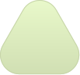

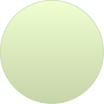
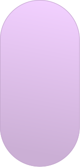
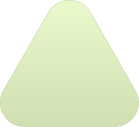
Sehat dimulai
dari Piringmu
Pelajari pola hidup sehat mulai dari gizimu!





Pelajari pola hidup sehat mulai dari gizimu!

Di tahun 2024, jumlah anak balita di indonesia sebanyak
Mengalami Stunting
(Gagal Tumbuh)
Di balik data ini, ada banyak keluarga yang sebenarnya ingin berubah, hanya belum tahu harus mulai dari mana.
Berdasarkan Survei Status Gizi Indonesia, sekitar 1 dari 5 anak Indonesia masih mengalami stunting akibat kekurangan gizi kronis angka yang meski menurun, tetap menjadi tantangan besar setiap tahunnya.

Sekitar 1 dari 5 anak Indonesia tercatat masih
Kekurangan Gizi Kronis
(Tingkat Nasional)
Gizy mengajak kamu belajar pelan-pelan lewat infografis yang mudah dipahami, sekaligus tips sederhana yang sudah dicoba dan dibagikan oleh teman-teman.
Panduan
Tips
Blog Sehat
 Panduan
Panduan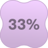
Sumber: Nasi, ubi jalar, kentang
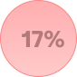
Sumber: Tahu, ikan, tempe, telur, ayam
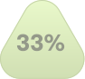
Sumber: Bayam, wortel, brokoli, kangkung

Sumber: Pisang, pepaya, jeruk, apel

Berikut adalah 3 tips untuk menjaga pola gizi sehat.
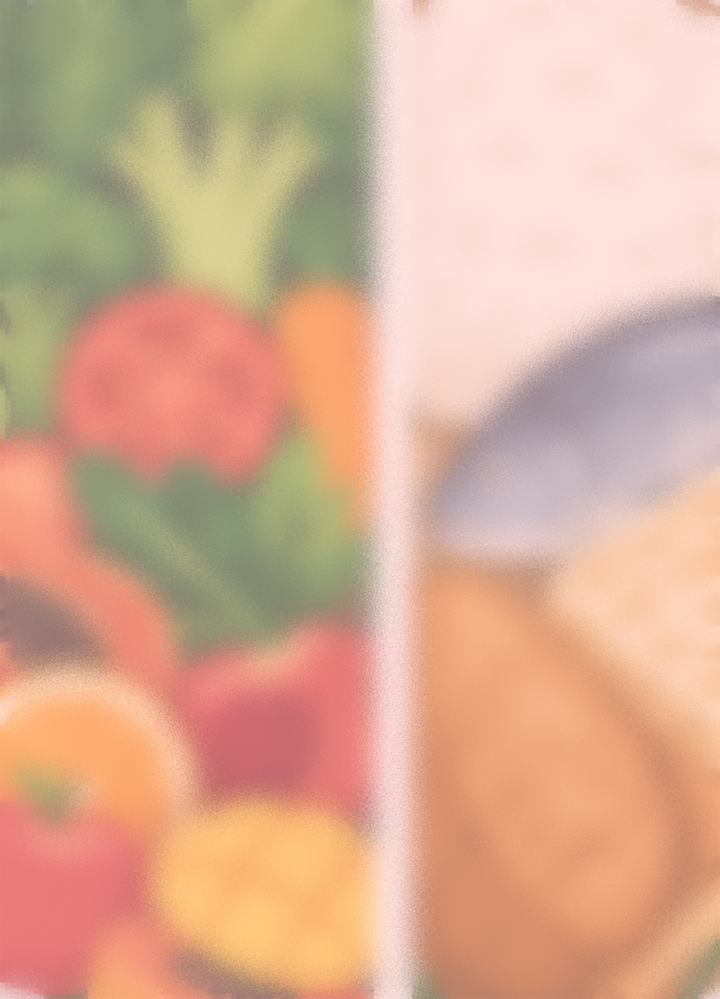
Hindari hanya satu jenis
makanan;
tubuh butuh kombinasi energi,
protein, vitamin, dan mineral.
Gunakan pangan lokal
(tempe, ikan, sayur hijau, buah
tropis) agar lebih terjangkau
dan bergizi.
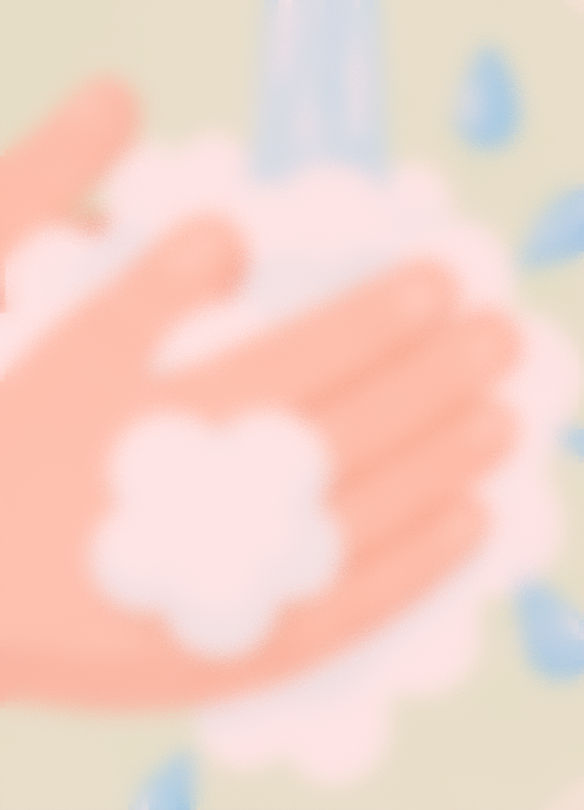
Kurangi makanan/minuman
tinggi gula, garam, dan lemak
(soft drink, gorengan,
makanan instan).
Biasakan membaca label gizi
pada kemasan untuk
mengontrol kalori dan
nutrisi.
Cuci tangan dengan sabun
sebelum makan.
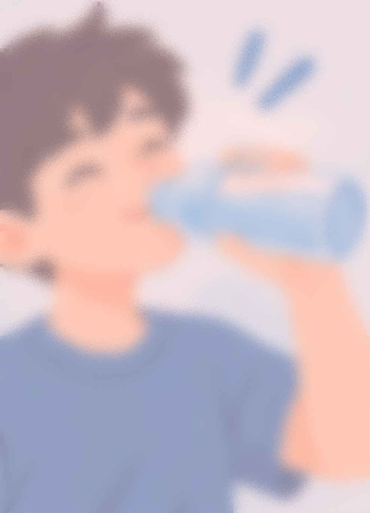
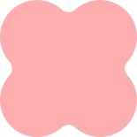
Sarapan bergizi setiap pagi
untuk energi dan konsentrasi.
Minum cukup air putih (8
gelas/hari) untuk
metabolisme.
Aktif bergerak: olahraga
ringan 30 menit/hari menjaga
berat badan ideal dan
kesehatan jantung.